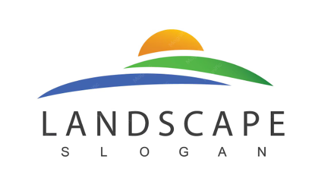
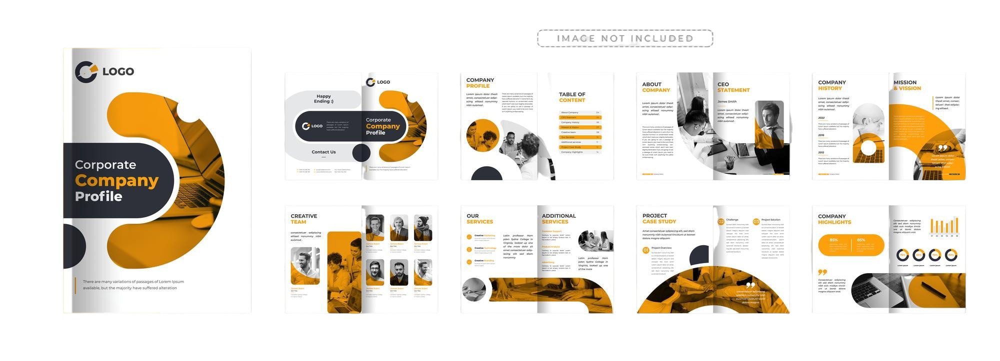

Professional & Creative Approach
Each website, flyer, logo, and brand document is shaped to communicate clearly and look purposeful.
I design and build modern websites, professional graphics and visual identities that help businesses and brands stand out.


I'm Elijah Zebron Tembo, a Graphics Designer, Web Designer and Front-End Developer passionate about creating modern, clean and user-friendly designs. I design and build front-end experiences with HTML, CSS and JavaScript, helping businesses, churches and brands present themselves through professional websites and creative graphics.
I specialize in web design, front-end development, brand identity, flyers, logos, social media graphics, company profiles and brochures. My goal is to create clear, consistent visual and digital work for each project.
Download CVBuilding digital experiences, visual identities, and branded materials.
Building responsive websites using HTML, CSS, JavaScript and modern web technologies.
Designing social media graphics, banners, and professional marketing materials.
Creating and developing branded merchandise for businesses and events.
Core Responsibilities
Clients
Projects
Years Experience
I design and build modern, responsive and user-friendly websites using HTML, CSS and JavaScript.
I create professional flyers, logos, posters and social media graphics that attract attention.
I help businesses build strong brand identity through professional and consistent designs. like logos, company or business profiles, brochures, etc.

Business and portfolio websites
View project
Social media, church, and business flyers
View project
Company and business logos
View project
Corporate and business profiles and brochures
View projectHTML
90%CSS
85%JavaScript
45%Photoshop
90%Illustrator
75%InDesign
70%From responsive websites to professional graphics and branded materials, I bring the right design focus to each project.
Each website, flyer, logo, and brand document is shaped to communicate clearly and look purposeful.
I work toward clean, user-friendly designs that help businesses, churches, and brands present themselves professionally.
Website projects are built with modern web technologies and considered for clear use across different screen sizes.
One creative practice covers websites, flyers, logos, social graphics, company profiles, brochures, and branded merchandise.
Tell me what you are working on, and I can help shape it into a professional website, graphic, or branded design.
Use the form or reach out through one of the existing channels below.
WhatsApp: Chat on WhatsApp
LinkedIn: linkedin.com/in/ElijahZebronTembo
Thank you for contacting me. I will get back to you shortly.